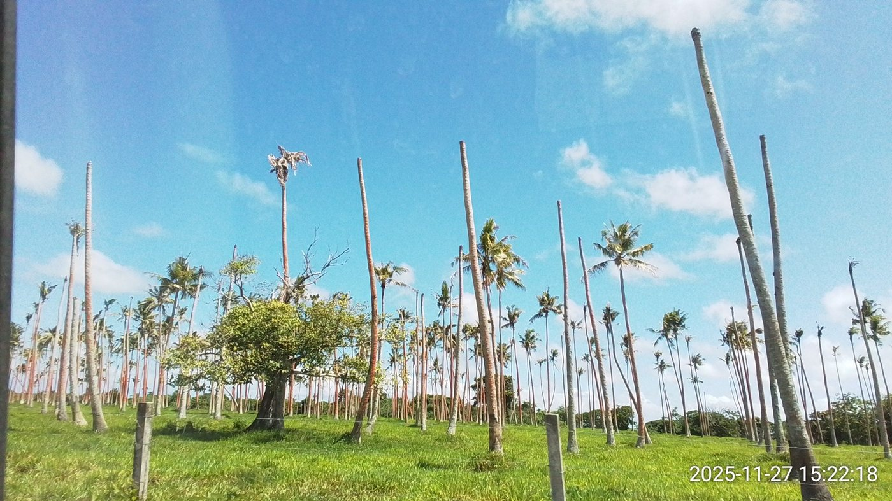
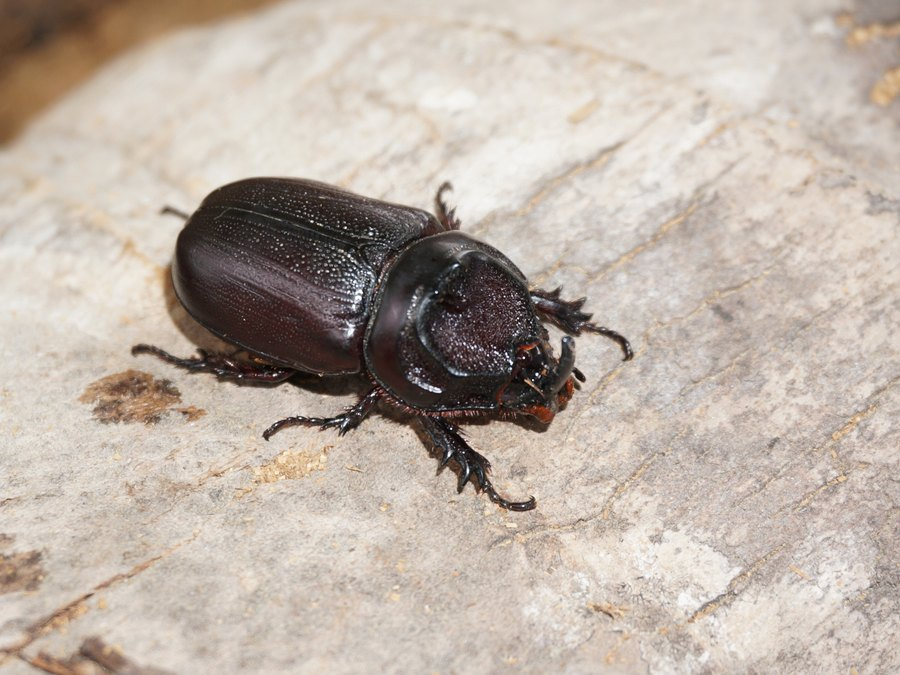
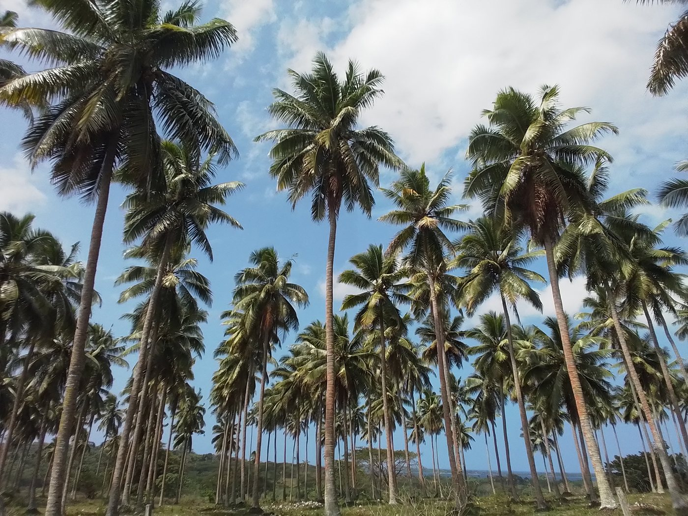
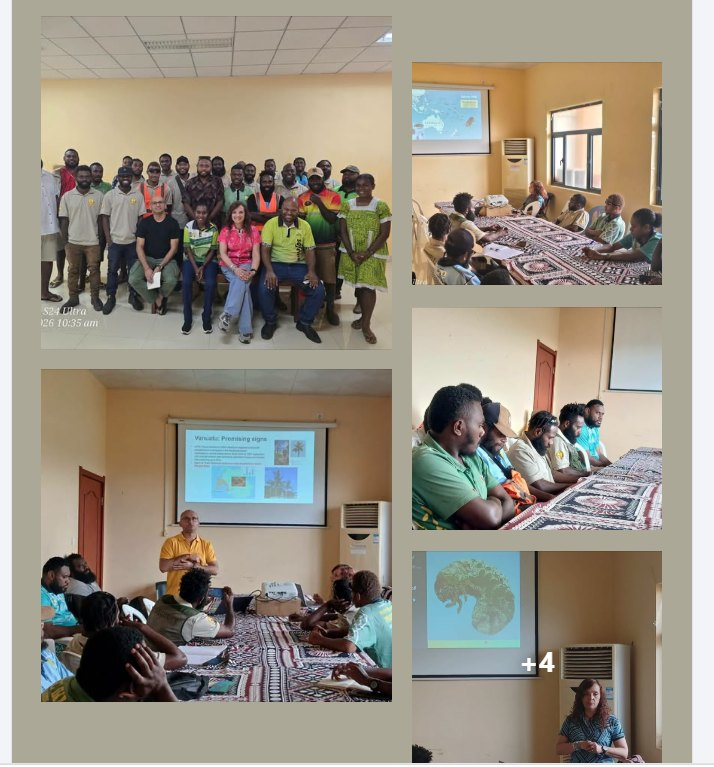

I have been travelling to Vanuatu for four or five years now, ten-plus trips, since the coconut rhinoceros beetle (CRB) first invaded in 2019. Most trips follow the same rhythm: land, drive past dead and dying palms, spend the week trying to get ahead of an insect that's been hard to get ahead of. Early September this year, on a work trip to Santo, that rhythm broke. For the first time in years, I stood in a coconut plantation and simply enjoyed the palms, rather than counting the damaged ones.
Ten trips, one invasion
CRB was confirmed in Efate in May 2019, and since then our team has worked with Vanuatu's Department of Agriculture, VARTC, and Biosecurity Vanuatu on a response: surveillance, sanitation, and testing biological control agents. We found a good option in Oryctes rhinoceros nudivirus, paired with the fungus Metarhizium majus, applied extensively since 2023. Both have established and spread well, and things are looking more promising in Efate than they used to.
Efate is still hard going, though. Years of damage have left many dead palms and abandoned plantations behind, exactly the breeding sites that keep CRB going, and that's slowed the recovery.

Efate, November 2025 — dead trunks and abandoned plantations like these are the breeding sites that have made the response so slow.
Santo, and a rare sight

CRB was only detected in Santo in 2024, and the local team has done an excellent job on sanitation, awareness, and getting biocontrol out early. Driving north of Luganville this trip, I saw something rare after years in Efate: most palms were healthy, with only a couple of old, abandoned plantations showing medium damage. A local biosecurity officer walked me through the timeline as we drove — first damage spotted in May 2024, a handful more sites confirmed through 2025 and into 2026. Even so, the damage on the ground stayed limited: none at one site, low at two others, high only at one old, abandoned plantation near the port.

Same beetle, same country, a few years apart in each place — early sanitation and biocontrol in Santo, years of accumulated damage in Efate.
A room full of questions
Santo's engagement helps explain it. On our first day, we gave talks on CRB and biological control to fifteen or twenty people, with far more back-and-forth than I'm used to in Efate. A few days later, a hands-on refresher at VARTC drew the same steady stream of questions.

The CRB refresher training in Santo — Biosecurity Vanuatu, VARTC, and Department of Agriculture staff working through biocontrol and monitoring together.
Photo: Biosecurity Vanuatu Department
That same engagement showed up at the top. Near the end of the trip, the senior officials we met were clearly appreciative of the work, one of them telling us:
"I am really pleased with the work that you all have done; coconut palms in here (Santo) look great and I don't see any damage, and even back in Vila (Port Vila), I can clearly see several palms recovering, which is really great."
— Director General, MAFLBNone of this means the job's done. Efate still carries the scars of the last four years, and all those dead palms and abandoned plantations give CRB plenty of places left to breed. But Santo is a good reminder of what's possible when sanitation, biocontrol, and an engaged local team come together early. It's a rare trip that leaves you feeling genuinely hopeful about an invasive beetle. This was one of them.